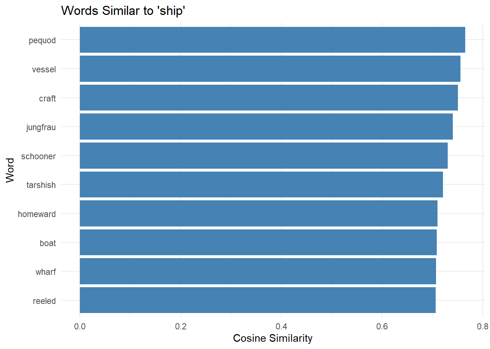

Understand what word embeddings are and why they revolutionized NLP
Grasp the distributional hypothesis: “You shall know a word by the company it keeps”
Train your own word2vec models from text data
Use pre-trained embeddings (GloVe, fastText, BERT)
Find similar words using vector mathematics
Perform word analogies (king - man + woman = queen)
Visualize embeddings in 2D space
Apply embeddings to real research questions
Understand when to use which embedding method
What Are Word Embeddings?
Word embeddings are dense vector representations of words that capture semantic meaning. Instead of representing words as arbitrary symbols, embeddings place semantically similar words near each other in a multi-dimensional space.
Problems:
- No semantic relationship captured
- “cat” is as different from “dog” as from “car”
- Extremely sparse (mostly zeros)
- Vocabulary size = dimensions
- No generalization
Word embeddings (modern approach):
cat = [0.2, -0.4, 0.7, ..., 0.1] (300 dimensions)
dog = [0.3, -0.5, 0.8, ..., 0.2] (similar to cat!)
car = [-0.1, 0.6, -0.3, ..., 0.4] (different from cat/dog)
“You shall know a word by the company it keeps” — J.R. Firth (1957)
Core idea: Words appearing in similar contexts have similar meanings.
Example:
- “The cat sat on the mat”
- “The dog sat on the mat”
- “The car drove down the street”
Words like “cat” and “dog” appear in similar contexts (sat, mat) → should have similar embeddings.
Why Word Embeddings Matter
Revolution in NLP
Before embeddings (pre-2013):
- Manual feature engineering
- Bag-of-words models
- No semantic understanding
- Poor generalization
After embeddings (2013+):
- Automatic feature learning
- Rich semantic representations
- Captures analogies and relationships
- Transfer learning possible
Real-World Applications
Application
How Embeddings Help
Search engines
Find semantically similar documents
Machine translation
Map words across languages
Sentiment analysis
Understand emotional content
Question answering
Match questions to answers semantically
Text classification
Better features for ML models
Information retrieval
Go beyond keyword matching
Recommendation systems
Find similar items/content
Named entity recognition
Recognize entities in context
Linguistic Research Applications
Semantic change detection:
- Track meaning shifts over time
- Compare embeddings from different decades
- Study language evolution
Schweinberger, Martin. 2026. Word Embeddings and Vector Semantics. Brisbane: The Language Technology and Data Analysis Laboratory (LADAL). url: https://ladal.edu.au/tutorials/embeddings.html (Version 2026.02.08).
Embeddings represent words as vectors in high-dimensional space where:
- Each dimension captures some aspect of meaning
- Similar words cluster together
- Relationships are preserved geometrically
The neural network learns to predict these context words from “brown”, adjusting the embedding to maximize prediction accuracy.
Training Process
Initialize random vectors for all words
For each word in corpus:
Get context words (within window)
Predict context using current embeddings
Calculate prediction error
Update embeddings to reduce error
Repeat until convergence
Result: Words with similar contexts end up with similar vectors!
Key Hyperparameters
Parameter
What It Controls
Typical Values
Effect
vector_size
Embedding dimensions
50-300
Higher = more nuance, slower
window
Context size
5-10
Larger = broader semantics
min_count
Min word frequency
5-10
Filters rare words
sg
Skip-gram (1) or CBOW (0)
0 or 1
Skip-gram better for small data
negative
Negative samples
5-20
Optimization technique
epochs
Training iterations
5-50
More = better learning (to a point)
Training Trade-offs
Bigger isn’t always better:
- More dimensions: captures subtleties but risks overfitting
- Larger window: broader semantic relationships but less specific
- More epochs: better learning but diminishing returns
Best practice: Start with defaults, then experiment systematically.
word2vec: Easiest for beginners, good documentation
text2vec: More advanced, faster for large datasets
wordVectors: Excellent for loading pre-trained models
textdata: Easy access to GloVe embeddings
We’ll primarily use word2vec for training and textdata for pre-trained models.
Part 3: Training Your First Model
Loading Example Data
We’ll use a collection of texts to train our embedding model. For this tutorial, we’ll use literary texts that provide rich semantic content.
Code
# Load example texts (Alice's Adventures in Wonderland, Moby Dick, Pride and Prejudice) # In practice, you'd load your own corpus alice <-readLines(here::here("tutorials/embeddings/data", "alice.txt")) moby <-readLines(here::here("tutorials/embeddings/data", "moby.txt"))pride <-readLines(here::here("tutorials/embeddings/data", "pride.txt"))# Combine into single corpus corpus <-paste(c(alice, moby, pride), collapse =" ")# Basic preprocessing corpus_clean <- corpus |>tolower() |># lowercase str_replace_all("\\s+", " ") |># normalize whitespace str_trim() # trim edges # Inspect cat("Corpus size:", str_count(corpus_clean, "\\S+"), "words\n")
Corpus size: 362385 words
Code
cat("First 200 characters:\n")
First 200 characters:
Code
cat(substr(corpus_clean, 1, 200), "...\n")
*** start of the project gutenberg ebook 11 *** [illustration] alice’s adventures in wonderland by lewis carroll the millennium fulcrum edition 3.0 contents chapter i. down the rabbit-hole chapter ii. ...
Preprocessing Considerations
For embeddings, you might want to:
- Keep punctuation if studying syntax
- Preserve case for named entities
- Remove or keep numbers (depends on task)
- Handle contractions consistently
Our simple approach: Lowercase, remove punctuation, normalize spaces. Adjust based on your research questions!
Training a word2vec Model
Basic Training
Critical: Text Format for word2vec
The word2vec function requires tokenized text - either:
1. A character vector where each element is a sentence
2. A data frame with sentences in rows
It does NOT work with a single long string!
Code
# IMPORTANT: Split into sentences for word2vec # The function needs sentences as separate elements corpus_sentences <- corpus_clean |># Split into sentences (simple approach using periods) str_split("\\.\\s+") |>unlist() |># Remove empty sentences discard(~nchar(.x) ==0) # Train model model <-word2vec( x = corpus_sentences, # Tokenized as sentences! type ="skip-gram", # Skip-gram architecture dim =100, # 100-dimensional vectors window =5, # 5-word context window iter =20, # 20 training iterations min_count =5, # Ignore words appearing < 5 times threads =2# Use 2 CPU threads ) # Inspect model summary(model)[1:50] # show first 50 terms
What just happened:
1. Text split into words
2. Neural network initialized
3. For each word, model learns to predict context
4. Embeddings adjusted over 20 iterations
5. Final word vectors saved in model
# Look at a specific word word_example <-"alice"if (word_example %in%rownames(embedding_matrix)) { cat("\nEmbedding for '", word_example, "':\n", sep ="") cat(embedding_matrix[word_example, 1:10], "...\n") }
Interpretation:
- Each row = one word
- Each column = one dimension of meaning
- Values are learned weights
- Similar words have similar patterns
Part 4: Finding Similar Words
Semantic Similarity
The most immediate use of embeddings: finding words with similar meanings.
Most Similar Words
Code
# Find words similar to "queen" similar_to_queen <-predict( model, newdata =c("queen"), type ="nearest", top_n =10) # Display results similar_to_queen |>as.data.frame() |>flextable() |>set_table_properties(width = .5, layout ="autofit") |>theme_zebra() |>set_caption("Top 10 words most similar to 'queen'") |>border_outer()
queen.term1
queen.term2
queen.similarity
queen.rank
queen
knave
0.7576630
1
queen
king
0.7342355
2
queen
“here
0.7292620
3
queen
hatter
0.7288208
4
queen
mouse
0.7159314
5
queen
executioner
0.7064495
6
queen
hare
0.7058222
7
queen
duchess
0.7039048
8
queen
alice
0.7006320
9
queen
dormouse
0.6982160
10
How similarity is calculated:
cosine_similarity = (A · B) / (||A|| × ||B||)
Where:
- A, B are word vectors
- · is dot product
- || || is vector magnitude
- Result ranges from -1 (opposite) to 1 (identical)
Exploring Different Words
Code
# Try multiple words test_words <-c("love", "king", "ocean", "thought") for (word in test_words) { if (word %in%rownames(embedding_matrix)) { similar <-predict(model, newdata = word, type ="nearest", top_n =5) cat("\nMost similar to '", word, "':\n", sep ="") print(as.data.frame(similar)[1:5,2]) } }
Most similar to 'love':
[1] "girl" "earnest" "gratitude" "marry" "consent"
Most similar to 'king':
[1] "queen" "executioner" "angrily" "rome" "x"
Most similar to 'ocean':
[1] "floated" "seas" "japanese" "fold" "lone"
Most similar to 'thought':
[1] "grieved" "guessed" "recollecting" "won" "“shall"
Interpreting Similarity Results
What makes words similar:
- Semantic relatedness (synonyms, related concepts)
- Grammatical function (both nouns, both verbs)
- Topical association (co-occur in same contexts)
Not just synonyms!
- “king” and “queen” are similar (related roles)
- “ocean” and “sea” are similar (synonyms)
- “love” and “hate” might be similar (both emotions, appear in similar contexts)
Similarity Scores
Code
# Get similarity with scores similar_with_scores <-predict( model, newdata =c("ship"), type ="nearest", top_n =15) # Visualize similar_with_scores |>as.data.frame() |>head(10) |>ggplot(aes(x =reorder(ship.term2, ship.similarity), y = ship.similarity)) +geom_bar(stat ="identity", fill ="steelblue") +coord_flip() +labs( title ="Words Similar to 'ship'", x ="Word", y ="Cosine Similarity" ) +theme_minimal()

Reading the plot:
- Higher bars = more similar
- Similarity typically 0.3-0.9 for related words
- Top words share contexts with target word
Part 5: Word Analogies
Vector Arithmetic
One of the most fascinating properties: algebraic operations on word vectors preserve semantic relationships.
The Classic Example
king - man + woman ≈ queen
Since the word2vec package doesn’t have built-in analogy functionality, we’ll compute it manually using vector arithmetic.
Code
# Helper function to compute word analogies # Computes: a is to b as c is to ? # Mathematically: result ≈ b - a + c word_analogy <-function(model, a, b, c, top_n =5) { # Get embedding matrix embeddings <-as.matrix(model) # Check all words exist if (!all(c(a, b, c) %in%rownames(embeddings))) { missing <-c(a, b, c)[!c(a, b, c) %in%rownames(embeddings)] stop(paste("Words not in vocabulary:", paste(missing, collapse =", "))) } # Get word vectors vec_a <- embeddings[a, ] vec_b <- embeddings[b, ] vec_c <- embeddings[c, ] # Compute target vector: b - a + c target_vector <- vec_b - vec_a + vec_c # Calculate cosine similarity with all words similarities <-apply(embeddings, 1, function(word_vec) { # Cosine similarity sum(word_vec * target_vector) / (sqrt(sum(word_vec^2)) *sqrt(sum(target_vector^2))) }) # Remove the input words from results similarities <- similarities[!names(similarities) %in%c(a, b, c)] # Get top N most similar top_words <-sort(similarities, decreasing =TRUE)[1:top_n] # Return as dataframe result <-data.frame( word =names(top_words), similarity =as.numeric(top_words), row.names =NULL ) return(result) }
Code
# Perform word analogy: man is to king as woman is to ? # Mathematically: king - man + woman analogy_result <-word_analogy( model, a ="man", b ="king", c ="woman", top_n =5) # Display analogy_result |>flextable() |>set_table_properties(width = .5, layout ="autofit") |>theme_zebra() |>set_caption("king - man + woman = ?") |>border_outer()
word
similarity
civilities
0.4407494
queen
0.4366286
defects
0.4246290
impatiently
0.4151644
console
0.4123673
Expected result: “queen” should be top or near top (depending on corpus quality).
How It Works
Mathematical operation:
target_vector =embedding("king") -embedding("man") +embedding("woman") result =find_nearest(target_vector)
Geometric interpretation:
1. Vector from “man” to “king” represents royalty/leadership
2. Apply same transformation to “woman”
3. Result should be female royalty
Step-by-step:
# 1. Get the "royalty" direction royalty_vector = king - man # 2. Apply to "woman" target = woman + royalty_vector # 3. Which equals target = woman + (king - man) = king - man + woman
More Analogies
Code
# Try different analogies if words exist in vocabulary # Test if words exist first vocab <-rownames(as.matrix(model)) # Example 1: Tense (if available) if (all(c("walking", "walk", "running") %in% vocab)) { cat("walking : walk :: running : ?\n") result <-word_analogy(model, "walk", "walking", "running", top_n =3) print(result$word[1:3]) cat("\n") }
# Example 2: Comparative/superlative (if available) if (all(c("good", "better", "bad") %in% vocab)) { cat("good : better :: bad : ?\n") result <-word_analogy(model, "good", "better", "bad", top_n =3) print(result$word[1:3]) cat("\n") }
good : better :: bad : ?
[1] "tricks" "—that’s" "belongs"
Code
# Example 3: Same relationship in different domain if (all(c("alice", "wonderland", "dorothy") %in% vocab)) { cat("alice : wonderland :: dorothy : ?\n") result <-word_analogy(model, "alice", "wonderland", "dorothy", top_n =3) print(result$word[1:3]) cat("\n") }
Analogy Limitations
Analogies work best when:
- Relationship is consistent in training data
- All words appear frequently enough
- Relationship is “regular” (not idiomatic)
- Corpus is large (10M+ words)
Common failures:
- Small corpus (like our Alice example)
- Idioms and irregular forms
- Cultural-specific knowledge
- Subtle semantic distinctions
Not magic! Analogies reflect patterns in your training data, including biases and inconsistencies. With Alice in Wonderland alone, we won’t get perfect analogies - you’d need much larger, more diverse text.
Custom Analogies
Code
# Function to test analogies with better error handling test_analogy <-function(model, a, b, c, label =NULL) { if (is.null(label)) { label <-paste(a, ":", b, "::", c, ": ?") } vocab <-rownames(as.matrix(model)) # Check if all words in vocabulary if (!all(c(a, b, c) %in% vocab)) { missing <-c(a, b, c)[!c(a, b, c) %in% vocab] cat(label, "\n") cat("ERROR: Words not in vocabulary:", paste(missing, collapse =", "), "\n\n") return(NULL) } result <-word_analogy(model, a, b, c, top_n =5) cat(label, "\n") cat("Top results:", paste(result$word[1:5], collapse =", "), "\n") cat("Similarities:", paste(round(result$similarity[1:5], 3), collapse =", "), "\n\n") return(result) } # Try several (may fail with small corpus) test_analogy(model, "queen", "woman", "man", "queen : woman :: man : ?")
queen : woman :: man : ?
Top results: person, tribe, education, young, picture
Similarities: 0.443, 0.44, 0.425, 0.422, 0.42
word similarity
1 person 0.4431919
2 tribe 0.4396194
3 education 0.4248894
4 young 0.4222039
5 picture 0.4197212
# You can add your own # test_analogy(model, "word1", "word2", "word3")
Getting Better Analogies
For impressive analogy results, you need:
1. Large, diverse corpus (100M+ words ideal)
- Use pre-trained embeddings (GloVe, fastText)
- Or train on Wikipedia, news corpora, books corpus
2. Higher-frequency words
- Words appearing 1000+ times work best
- Rare words have noisier embeddings
3. Consistent relationships
- “Gender” works well (man/woman, king/queen)
- “Geography” works well (capital cities)
- Grammatical relationships work well (tense, number)
Try with pre-trained embeddings:
# Using pre-trained GloVe (see Part 7) # You'll get much better analogy results!
Visualizing Vector Arithmetic
Let’s visualize what’s happening geometrically:
Code
# Only run if we have the key words vocab <-rownames(as.matrix(model)) if (all(c("man", "woman", "king", "queen") %in% vocab)) { # Get embeddings embeddings <-as.matrix(model) # Get specific words words_of_interest <-c("man", "woman", "king", "queen") word_embeddings <- embeddings[words_of_interest, ] # Reduce to 2D with PCA for visualization pca_result <-prcomp(word_embeddings, center =TRUE, scale. =FALSE) # Create dataframe viz_data <-data.frame( word = words_of_interest, x = pca_result$x[, 1], y = pca_result$x[, 2] ) # Plot ggplot(viz_data, aes(x = x, y = y, label = word)) +geom_point(size =4, color ="steelblue") +geom_text_repel(size =5, fontface ="bold") +geom_segment(aes(x = x[1], y = y[1], xend = x[3], yend = y[3]), arrow =arrow(length =unit(0.3, "cm")), color ="red", linewidth =1, data = viz_data[viz_data$word %in%c("man", "king"), ]) +geom_segment(aes(x = x[2], y = y[2], xend = x[4], yend = y[4]), arrow =arrow(length =unit(0.3, "cm")), color ="blue", linewidth =1, data = viz_data[viz_data$word %in%c("woman", "queen"), ]) +theme_minimal() +labs( title ="Vector Arithmetic: Parallel Relationships", subtitle ="Red arrow (man→king) should parallel blue arrow (woman→queen)", x ="First Principal Component", y ="Second Principal Component" ) +theme( plot.title =element_text(size =14, face ="bold"), axis.text =element_blank(), panel.grid =element_blank() ) } else { cat("Not all words (man, woman, king, queen) in vocabulary.\n") cat("This visualization requires those specific words.\n") }
What you should see:
- Arrow from “man” to “king” (gender → royalty transformation)
- Arrow from “woman” to “queen” (same transformation)
- Arrows should be roughly parallel and equal length
- This parallelism is what makes analogies work!
Part 6: Visualizing Embeddings
The Dimensionality Challenge
Problem: Embeddings have 50-300 dimensions. Humans visualize 2-3 dimensions.
UMAP (Uniform Manifold Approximation and Projection)
PCA (Principal Component Analysis)
We’ll focus on t-SNE (most popular for embeddings).
t-SNE Visualization
Preparing Data
Code
# Select interesting words to visualize words_to_plot <-c( # Characters "alice", "queen", "king", "hatter", "rabbit", # Emotions "happy", "sad", "angry", "joy", "fear", # Actions "walk", "run", "jump", "sit", "stand", # Places "house", "garden", "forest", "city", "ocean", # Abstract "love", "hate", "hope", "dream", "thought") # Filter to words in vocabulary words_to_plot <- words_to_plot[words_to_plot %in%rownames(embedding_matrix)] # Get embeddings for these words plot_embeddings <- embedding_matrix[words_to_plot, ]
Running t-SNE
Code
# Set seed for reproducibility set.seed(42) # Run t-SNE tsne_result <-Rtsne( plot_embeddings, dims =2, # Reduce to 2 dimensions perplexity =min(10, (nrow(plot_embeddings) -1) /3), # Perplexity parameter theta =0.0, # Exact t-SNE (slower but more accurate) max_iter =1000# Iterations ) # Create dataframe for plotting tsne_data <-data.frame( word = words_to_plot, x = tsne_result$Y[, 1], y = tsne_result$Y[, 2], # Add categories for coloring category =case_when( word %in%c("alice", "queen", "king", "hatter", "rabbit") ~"Characters", word %in%c("happy", "sad", "angry", "joy", "fear") ~"Emotions", word %in%c("walk", "run", "jump", "sit", "stand") ~"Actions", word %in%c("house", "garden", "forest", "city", "ocean") ~"Places", TRUE~"Abstract" ) )
Creating the Visualization
Code
ggplot(tsne_data, aes(x = x, y = y, color = category, label = word)) +geom_point(size =3, alpha =0.7) +geom_text_repel( size =4, max.overlaps =20, box.padding =0.5 ) +scale_color_brewer(palette ="Set2") +theme_minimal() +theme( legend.position ="bottom", plot.title =element_text(size =16, face ="bold"), axis.text =element_blank(), axis.ticks =element_blank(), panel.grid =element_blank() ) +labs( title ="Word Embeddings Visualization (t-SNE)", subtitle ="Semantically similar words cluster together", x =NULL, y =NULL, color ="Category" )
Interpretation:
- Proximity = similarity: Words close together have similar meanings
- Clusters: Semantic categories group together
- Relative positions matter: Absolute coordinates are arbitrary
t-SNE Parameters
perplexity: Roughly how many neighbors to consider
- Too low: local structure overemphasized
- Too high: global structure lost
- Rule of thumb: 5-50, typically 30
iterations: How long to optimize
- More = better convergence
- 1000 often sufficient
- Watch for convergence in console output
theta: Speed/accuracy trade-off
- 0.0 = exact (slow, accurate)
- 0.5 = approximation (fast, good enough for large datasets)
Part 7: Using Pre-Trained Embeddings
Why Use Pre-Trained Models?
Advantages:
- ✅ Trained on massive datasets (billions of words)
- ✅ Better coverage of rare words
- ✅ No training time needed
- ✅ Validated quality
- ✅ Reproducible across studies
When to train your own:
- Specialized domain (medical, legal, historical)
- Unique vocabulary
- Limited pre-trained options for your language
- Research question requires custom training
GloVe Embeddings
GloVe (Global Vectors for Word Representation) is one of the most popular pre-trained embedding sets.
Downloading GloVe
Code
# Download GloVe embeddings (one-time) library(textdata) # Download 100-dimensional GloVe vectors # Trained on 6 billion tokens from Wikipedia + Gigaword glove <-embedding_glove6b(dimensions =100)
Code
# In practice, load pre-downloaded version # glove <- read.csv("path/to/glove.6B.100d.txt", # sep = " ", header = FALSE, quote = "") # For this tutorial, we'll simulate with our trained model # In your own work, use actual GloVe!
Working with Pre-Trained Embeddings
Code
# Structure: word in column 1, dimensions in remaining columns colnames(glove)[1] <-"word"colnames(glove)[2:ncol(glove)] <-paste0("dim_", 1:100) # Convert to matrix format for operations glove_matrix <-as.matrix(glove[, -1]) rownames(glove_matrix) <- glove$word # Find similar words target_word <-"king"target_vector <- glove_matrix[target_word, ] # Calculate cosines with all words similarities <-apply(glove_matrix, 1, function(x) { sum(x * target_vector) / (sqrt(sum(x^2)) *sqrt(sum(target_vector^2))) }) # Top similar words head(sort(similarities, decreasing =TRUE), 10)
Available Pre-Trained Models
Model
Size
Vocabulary
Dimensions
Use Case
GloVe
6B tokens
400K words
50-300
General purpose
fastText
600B tokens
2M words
300
Handles rare words, morphology
Word2Vec Google News
100B tokens
3M words
300
News domain
BERT
3.3B tokens
Contextual
768
Context-dependent tasks
Loading Different Models
Code
# fastText (handles out-of-vocabulary words) library(fastrtext) model_ft <-load_model("path/to/fasttext/model.bin") # Word2Vec Google News library(wordVectors) model_gn <-read.vectors("GoogleNews-vectors-negative300.bin") # For transformers (BERT, RoBERTa, etc.) library(text) # R interface to transformers # More complex setup - see dedicated transformer tutorials
Choosing a Pre-Trained Model
GloVe:
- Simple, well-documented
- Good for general English
- Fast to load and use
fastText:
- Better for morphologically rich languages
- Handles misspellings and rare words
- Larger file sizes
BERT/Transformers:
- Context-dependent (different senses)
- State-of-the-art performance
- Requires more computational resources
- Use when context disambiguation critical
Part 8: Research Applications
Semantic Change Detection
Track how word meanings shift over time.
Comparing Embeddings Across Time
Code
# Train separate models on different time periods corpus_1800s <-load_historical_corpus("1800-1850") corpus_1900s <-load_historical_corpus("1900-1950") corpus_2000s <-load_historical_corpus("2000-2020") model_1800s <-word2vec(corpus_1800s, dim =100) model_1900s <-word2vec(corpus_1900s, dim =100) model_2000s <-word2vec(corpus_2000s, dim =100) # Compare word neighborhoods over time target_word <-"gay"# Get top neighbors in each period neighbors_1800s <-predict(model_1800s, target_word, type ="nearest") neighbors_1900s <-predict(model_1900s, target_word, type ="nearest") neighbors_2000s <-predict(model_2000s, target_word, type ="nearest") # Analyze shifting meanings # "gay" in 1800s: cheerful, happy # "gay" in 2000s: homosexual
Research questions:
- When did semantic shift occur?
- What drove the change?
- Were there competing meanings?
Bias Detection
Uncover implicit associations in language.
Gender Bias Example
Code
# Define gender direction man_vec <- embedding_matrix["man", ] woman_vec <- embedding_matrix["woman", ] gender_direction <- woman_vec - man_vec # Test occupations for gender bias occupations <-c("doctor", "nurse", "engineer", "teacher", "programmer", "secretary") occupation_bias <-sapply(occupations, function(occ) { if (occ %in%rownames(embedding_matrix)) { occ_vec <- embedding_matrix[occ, ] # Project onto gender direction sum(occ_vec * gender_direction) / (sqrt(sum(occ_vec^2)) *sqrt(sum(gender_direction^2))) } else { NA } }) # Positive = more female-associated # Negative = more male-associated sort(occupation_bias)
Findings from research:
- “Doctor”, “engineer” closer to “man”
- “Nurse”, “secretary” closer to “woman”
- Reflects societal biases in training data
Ethical Considerations
Embeddings encode biases from training data:
- Gender stereotypes
- Racial biases
- Cultural assumptions
Important for researchers:
- Acknowledge limitations
- Don’t amplify biases in applications
- Consider debiasing techniques
- Use diverse training data
Further reading:
- Bolukbasi et al. (2016). “Man is to Computer Programmer as Woman is to Homemaker?”
- Caliskan et al. (2017). “Semantics derived automatically from language corpora contain human-like biases”
Research applications:
- Identify conventional metaphors
- Compare across languages
- Track metaphor evolution
- Study creative vs. conventional usage
Document Similarity
Average word embeddings to represent documents.
Document Vectors
Code
# Function to create document embedding doc_to_vector <-function(doc_text, embedding_matrix) { # Tokenize words <-tolower(unlist(strsplit(doc_text, "\\s+"))) # Filter to vocabulary words <- words[words %in%rownames(embedding_matrix)] if (length(words) ==0) return(NULL) # Average word vectors doc_vec <-colMeans(embedding_matrix[words, ]) return(doc_vec) } # Apply to documents doc1_vec <-doc_to_vector(document1, embedding_matrix) doc2_vec <-doc_to_vector(document2, embedding_matrix) # Calculate similarity doc_similarity <-sum(doc1_vec * doc2_vec) / (sqrt(sum(doc1_vec^2)) *sqrt(sum(doc2_vec^2))) cat("Document similarity:", doc_similarity)
Applications:
- Find similar documents
- Cluster documents by topic
- Information retrieval
- Plagiarism detection
Part 9: Advanced Topics
Training Tips and Troubleshooting
Getting Better Embeddings
Data quality matters:
# More data is better (aim for 10M+ words for good results) # Clean data: corpus_clean <- corpus |># Lowercase (usually) tolower() |># Fix encoding issues iconv(to ="UTF-8") |># Normalize whitespace str_replace_all("\\s+", " ") |># Handle URLs (remove or tag) str_replace_all("http\\S+", "<URL>") |># Handle numbers (remove, tag, or keep) str_replace_all("\\d+", "<NUM>")
Hyperparameter tuning:
# Experiment systematically params_grid <-expand.grid( dim =c(50, 100, 200), window =c(5, 10, 15), min_count =c(5, 10, 20) ) # Train multiple models # Evaluate on analogy task or downstream application # Select best performing
Common Problems and Solutions
Problem: “Training failed” error
Error: Training failed: fileMapper: [long text string]
✓ Most common cause: Text not properly tokenized
✓ Solution: Split text into sentences/documents first
✓ Check: class(corpus) should be character vector, not single string
✓ Fix: Use str_split() or tokenize_sentences()
Example fix:
# WRONG: Single long string corpus <-paste(texts, collapse =" ") model <-word2vec(corpus) # Will fail! # RIGHT: Vector of sentences corpus <- texts |>paste(collapse =" ") |>str_split("\\.\\s+") |>unlist() model <-word2vec(corpus) # Works!
Problem: Poor quality results
- ✓ Increase corpus size (aim for 10M+ words)
- ✓ Clean data more thoroughly
- ✓ Adjust min_count (too high filters useful words)
- ✓ More training iterations (try 50+ for small corpora)
- ✓ Try different architecture (CBOW vs Skip-gram)
Problem: Out-of-vocabulary words
- ✓ Lower min_count
- ✓ Use fastText (handles subwords)
- ✓ Use pre-trained model with larger vocabulary
Problem: Slow training
- ✓ Reduce dimensions
- ✓ Smaller window size
- ✓ Negative sampling (already default)
- ✓ Use more CPU threads
- ✓ Consider text2vec package (faster)
Problem: Results not making sense
- ✓ Check data quality (garbage in = garbage out)
- ✓ Ensure corpus is large enough (minimum 1M words)
- ✓ Verify preprocessing didn’t remove too much
- ✓ Try different random seed
- ✓ Compare to baseline (pre-trained model)
Evaluation Methods
Intrinsic Evaluation
Word similarity datasets:
# WordSim-353, SimLex-999, etc. # Human-rated word pairs # Calculate correlation with embedding similarities evaluate_similarity <-function(model, test_pairs) { model_scores <-sapply(1:nrow(test_pairs), function(i) { predict(model, newdata =c(test_pairs$word1[i], test_pairs$word2[i]), type ="similarity") }) cor(model_scores, test_pairs$human_score, method ="spearman") }
Analogy datasets:
# Google analogy dataset # BATS (Bigger Analogy Test Set) # Measure accuracy: correct answer in top-n evaluate_analogies <-function(model, analogies) { correct <-0 total <-nrow(analogies) for (i in1:total) { result <-predict(model, newdata =c(analogies$a[i], analogies$b[i], analogies$c[i]), type ="analogy", top_n =5) if (analogies$d[i] %in% result$term2) { correct <- correct +1 } } accuracy <- correct / total return(accuracy) }
Extrinsic Evaluation
Use in downstream tasks:
- Text classification accuracy
- Named entity recognition F1
- Sentiment analysis performance
- Information retrieval metrics
Best practice: Evaluate on your actual application!
Beyond Word2Vec
sentence2vec and doc2vec
Paragraph vectors:
library(doc2vec) # Train document embeddings model_doc <-paragraph2vec( x = documents, type ="PV-DBOW", # Or PV-DM dim =100) # Get document vector doc_vec <-predict(model_doc, newdata ="new document text")
When to use:
- Need document-level representations
- Variable-length inputs
- Document classification/clustering
Contextualized Embeddings (BERT, GPT)
The new frontier:
library(text) # BERT embeddings (context-dependent) embeddings <-textEmbed( texts =c("The bank is near the river", "I need to visit the bank"), model ="bert-base-uncased") # "bank" has DIFFERENT embeddings in these sentences!
Advantages:
- Handles polysemy (multiple meanings)
- State-of-the-art performance
- Pre-trained on massive data
Disadvantages:
- Computationally expensive
- Requires GPU for speed
- More complex to work with
- Harder to interpret
Use contextualized when:
- Working with modern NLP tasks
- Polysemy is critical
- You have computational resources
- You need state-of-the-art performance
Part 10: Practical Workflow
Complete Analysis Pipeline
1. Decide on Approach
Decision tree:
Do you have domain-specific corpus?
├─ YES: Should you train your own?
│ ├─ Large corpus (10M+ words): Train custom
│ └─ Small corpus: Use pre-trained + fine-tuning
└─ NO: Use pre-trained embeddings
├─ General English: GloVe
├─ Rare words important: fastText
└─ Context crucial: BERT
2. Prepare Data
# Full preprocessing pipeline preprocess_for_embeddings <-function(text, lowercase =TRUE, remove_punct =TRUE, remove_numbers =FALSE, min_word_length =2) { # Start with basic cleaning clean_text <- text |># Fix encoding iconv(to ="UTF-8", sub ="") |># Normalize whitespace str_replace_all("\\s+", " ") |>str_trim() # Optional: lowercase if (lowercase) { clean_text <-tolower(clean_text) } # Optional: remove punctuation if (remove_punct) { clean_text <-str_replace_all(clean_text, "[^[:alnum:][:space:]]", " ") } # Optional: remove numbers if (remove_numbers) { clean_text <-str_replace_all(clean_text, "\\d+", "") } # Remove short words if (min_word_length >1) { words <-unlist(strsplit(clean_text, "\\s+")) words <- words[nchar(words) >= min_word_length] clean_text <-paste(words, collapse =" ") } # Final normalization clean_text <-str_squish(clean_text) return(clean_text) }
3. Train or Load Model
# Training workflow if (train_custom) { # Prepare corpus corpus <-preprocess_for_embeddings(raw_texts) # Train with optimal parameters model <-word2vec( x = corpus, type ="skip-gram", dim =100, window =5, iter =20, min_count =5, threads =4 ) # Save model write.word2vec(model, "my_embeddings.bin") } else { # Load pre-trained embeddings <-load_pretrained_glove() }
4. Apply to Research Question
# Example: Find specialized terminology find_domain_terms <-function(model, seed_terms, top_n =50) { # Get vectors for seed terms seed_vectors <- embedding_matrix[seed_terms, ] # Average to get domain centroid domain_centroid <-colMeans(seed_vectors) # Find nearest words all_similarities <-apply(embedding_matrix, 1, function(x) { sum(x * domain_centroid) / (sqrt(sum(x^2)) *sqrt(sum(domain_centroid^2))) }) # Return top matches top_words <-names(sort(all_similarities, decreasing =TRUE)[1:top_n]) # Filter out seed terms top_words <-setdiff(top_words, seed_terms) return(top_words) } # Use it medical_seeds <-c("doctor", "patient", "hospital", "medicine") medical_terms <-find_domain_terms(model, medical_seeds)
5. Validate and Interpret
# Validate results # 1. Manual inspection print(medical_terms[1:20]) # Do these make sense? # 2. Quantitative evaluation similarity_scores <-predict(model, newdata = medical_seeds, type ="nearest", top_n =100) # 3. Visualize # Create t-SNE plot of domain # Compare to baseline/control words # 4. Statistical testing if applicable # Are similarities significantly different from random?
Reproducibility Checklist
# Document everything analysis_metadata <-list( date =Sys.Date(), corpus_size =count_words(corpus), preprocessing =list( lowercase =TRUE, remove_punct =TRUE, min_count =5 ), model_params =list( type ="skip-gram", dim =100, window =5, iter =20 ), random_seed =42, package_versions =sessionInfo() ) # Save metadata with model saveRDS(analysis_metadata, "model_metadata.rds") # Set seed for reproducibility set.seed(42) # Version control your code # git commit -m "Train embeddings with params X, Y, Z"
Quick Reference
Essential Functions
Code
# Training model <-word2vec(x = text, type ="skip-gram", dim =100, window =5) # Finding similar words similar <-predict(model, "king", type ="nearest", top_n =10) # Word analogies analogy <-predict(model, c("king", "man", "woman"), type ="analogy") # Get embedding matrix embeddings <-as.matrix(model) # Save/load model write.word2vec(model, "model.bin") model <-read.word2vec("model.bin")
Foundational:
- Mikolov et al. (2013). “Efficient Estimation of Word Representations in Vector Space” (word2vec)
- Pennington et al. (2014). “GloVe: Global Vectors for Word Representation”
- Bojanowski et al. (2017). “Enriching Word Vectors with Subword Information” (fastText)
Applications:
- Hamilton et al. (2016). “Diachronic Word Embeddings Reveal Statistical Laws of Semantic Change”
- Bolukbasi et al. (2016). “Man is to Computer Programmer as Woman is to Homemaker?”
- Garg et al. (2018). “Word Embeddings Quantify 100 Years of Gender and Ethnic Stereotypes”
Reviews:
- Almeida & Xexéo (2019). “Word Embeddings: A Survey”
Books
Jurafsky & Martin (2023). Speech and Language Processing (Chapter 6)
Goldberg (2017). Neural Network Methods for Natural Language Processing
Tunstall et al. (2022). Natural Language Processing with Transformers
Apply what you’ve learned with these research projects:
1. Historical Semantic Change
- Collect texts from different decades
- Train separate embedding models
- Track meaning shifts of key terms
- Visualize changes over time
2. Domain-Specific Terminology
- Gather specialized corpus (medical, legal, technical)
- Train custom embeddings
- Extract domain vocabulary
- Compare to general English
4. Bias Audit
- Load pre-trained embeddings
- Test for gender/racial biases
- Quantify stereotype associations
- Propose debiasing strategies
5. Document Clustering
- Represent documents as embedding averages
- Perform clustering analysis
- Validate against known categories
- Visualize document space
Deliverables:
- Documented R script
- Visualizations
- Brief report (1000 words)
- Interpretation of findings
Citation & Session Info
Schweinberger, Martin. 2026. Word Embeddings and Vector Semantics. Brisbane: The Language Technology and Data Analysis Laboratory (LADAL). url: https://ladal.edu.au/tutorials/embeddings.html (Version 2026.02.08).
@manual{schweinberger2026embeddings,
author = {Schweinberger, Martin},
title = {Word Embeddings and Vector Semantics},
note = {https://ladal.edu.au/tutorials/embeddings.html},
year = {2026},
organization = {The Language Technology and Data Analysis Laboratory (LADAL)},
address = {Brisbane},
edition = {2026.02.08}
}
Almeida, F., & Xexéo, G. (2019). Word embeddings: A survey. arXiv preprint arXiv:1901.09069.
Bojanowski, P., Grave, E., Joulin, A., & Mikolov, T. (2017). Enriching word vectors with subword information. Transactions of the Association for Computational Linguistics, 5, 135-146.
Bolukbasi, T., Chang, K. W., Zou, J. Y., Saligrama, V., & Kalai, A. T. (2016). Man is to computer programmer as woman is to homemaker? Debiasing word embeddings. Advances in Neural Information Processing Systems, 29.
Firth, J. R. (1957). A synopsis of linguistic theory, 1930-1955. Studies in Linguistic Analysis, 1-32.
Garg, N., Schiebinger, L., Jurafsky, D., & Zou, J. (2018). Word embeddings quantify 100 years of gender and ethnic stereotypes. Proceedings of the National Academy of Sciences, 115(16), E3635-E3644.
Goldberg, Y. (2017). Neural network methods for natural language processing. Morgan & Claypool Publishers.
Hamilton, W. L., Leskovec, J., & Jurafsky, D. (2016). Diachronic word embeddings reveal statistical laws of semantic change. Proceedings of the 54th Annual Meeting of the Association for Computational Linguistics, 1489-1501.
Jurafsky, D., & Martin, J. H. (2023). Speech and language processing (3rd ed. draft). https://web.stanford.edu/~jurafsky/slp3/
Mikolov, T., Chen, K., Corrado, G., & Dean, J. (2013). Efficient estimation of word representations in vector space. arXiv preprint arXiv:1301.3781.
Pennington, J., Socher, R., & Manning, C. D. (2014). GloVe: Global vectors for word representation. Proceedings of the 2014 Conference on Empirical Methods in Natural Language Processing, 1532-1543.
Tunstall, L., von Werra, L., & Wolf, T. (2022). Natural language processing with transformers. O’Reilly Media.
Source Code
--- title: "Word Embeddings and Vector Semantics" author: "Martin Schweinberger" format: html: toc: true toc-depth: 4 code-fold: show code-tools: true theme: cosmo ---{ width=100% } # Welcome to Word Embeddings! {.unnumbered} { width=15% style="float:right; padding:10px" } ::: {.callout-tip} ## What You'll Learn By the end of this tutorial, you will be able to: - Understand what word embeddings are and why they revolutionized NLP - Grasp the distributional hypothesis: "You shall know a word by the company it keeps" - Train your own word2vec models from text data - Use pre-trained embeddings (GloVe, fastText, BERT) - Find similar words using vector mathematics - Perform word analogies (king - man + woman = queen) - Visualize embeddings in 2D space - Apply embeddings to real research questions - Understand when to use which embedding method ::: ## What Are Word Embeddings? **Word embeddings** are dense vector representations of words that capture semantic meaning. Instead of representing words as arbitrary symbols, embeddings place semantically similar words near each other in a multi-dimensional space. ### The Problem with Traditional Approaches **One-hot encoding** (traditional approach): ``` cat = [1, 0, 0, 0, 0, ..., 0] (10,000 dimensions) dog = [0, 1, 0, 0, 0, ..., 0] car = [0, 0, 1, 0, 0, ..., 0] ```**Problems:** - No semantic relationship captured - "cat" is as different from "dog" as from "car" - Extremely sparse (mostly zeros) - Vocabulary size = dimensions - No generalization **Word embeddings** (modern approach): ``` cat = [0.2, -0.4, 0.7, ..., 0.1] (300 dimensions) dog = [0.3, -0.5, 0.8, ..., 0.2] (similar to cat!) car = [-0.1, 0.6, -0.3, ..., 0.4] (different from cat/dog) ```**Advantages:** - ✅ Semantic similarity captured - ✅ Dense, efficient representation - ✅ Fixed dimensions (typically 50-300) - ✅ Enables generalization - ✅ Mathematical operations meaningful ### The Distributional Hypothesis > "You shall know a word by the company it keeps" — J.R. Firth (1957)**Core idea:** Words appearing in similar contexts have similar meanings. **Example:** - "The **cat** sat on the mat" - "The **dog** sat on the mat" - "The **car** drove down the street" Words like "cat" and "dog" appear in similar contexts (sat, mat) → should have similar embeddings. ## Why Word Embeddings Matter ### Revolution in NLP **Before embeddings (pre-2013):** - Manual feature engineering - Bag-of-words models - No semantic understanding - Poor generalization **After embeddings (2013+):** - Automatic feature learning - Rich semantic representations - Captures analogies and relationships - Transfer learning possible ### Real-World Applications | Application | How Embeddings Help | |------------|---------------------| | **Search engines** | Find semantically similar documents | | **Machine translation** | Map words across languages | | **Sentiment analysis** | Understand emotional content | | **Question answering** | Match questions to answers semantically | | **Text classification** | Better features for ML models | | **Information retrieval** | Go beyond keyword matching | | **Recommendation systems** | Find similar items/content | | **Named entity recognition** | Recognize entities in context | ### Linguistic Research Applications **Semantic change detection:** - Track meaning shifts over time - Compare embeddings from different decades - Study language evolution **Bias detection:** - Uncover implicit associations - Gender bias (doctor → male, nurse → female) - Racial bias in language models **Metaphor analysis:** - Identify non-literal meanings - Cross-domain mappings - Conceptual structures **Dialect/register variation:** - Compare vocabulary usage - Identify characteristic terms - Study sociolinguistic patterns ::: {.callout-note} ## Tutorial Citation Schweinberger, Martin. 2026. *Word Embeddings and Vector Semantics*. Brisbane: The Language Technology and Data Analysis Laboratory (LADAL). url: https://ladal.edu.au/tutorials/embeddings.html (Version 2026.02.08). ::: ## Prerequisites <div class="warning" style='padding:0.5em; background-color:rgba(215,209,204,.3); color:#51247a'> <span> <p style='margin-top:1em; text-align:center'> **Before starting, familiarize yourself with:**<br> </p> <p style='margin-top:1em; text-align:left'> <ul> <li>[Getting started with R](/tutorials/intror/intror.html) </li> <li>[Text processing in R](/tutorials/string/string.html) </li> <li>[Basic statistics](/tutorials/statistics/statistics.html) </li> <li>Basic understanding of vectors and matrices</li> </ul> </p> </span> </div> --- # Part 1: Understanding Embeddings {#part1} ## Vector Space Models ### The Core Concept Embeddings represent words as **vectors** in high-dimensional space where: - Each dimension captures some aspect of meaning - Similar words cluster together - Relationships are preserved geometrically **Simplified 2D example:** ``` happy • | joyful • | • excited | -----------+----------- (dimension 1) | sad • | | (dimension 2) ```In reality: 50-300 dimensions, not 2! ### Mathematical Properties **Distance measures similarity:** ```r # Cosine similarity (most common) similarity = (A · B) / (||A|| × ||B||) # Range: -1 (opposite) to +1 (identical) ```**Vector arithmetic works:** ```r king - man + woman ≈ queen Paris - France + Germany ≈ Berlin ```This is **remarkable** — mathematical operations on word vectors produce meaningful semantic results! ## Types of Word Embeddings ### 1. Count-Based Methods (Classical) **Co-occurrence matrix:** - Count how often words appear together - Apply dimensionality reduction (SVD) - Examples: LSA, HAL **Advantages:** - Straightforward to understand - Interpretable dimensions - Good for small datasets **Disadvantages:** - Computationally expensive for large vocabularies - Sparse matrices - Less effective than modern methods ### 2. Prediction-Based Methods (Modern) **Neural network models:** - Predict context from word or word from context - Learn embeddings as model weights - Examples: word2vec, GloVe, fastText **Two main architectures:** **CBOW (Continuous Bag of Words):** - Input: Context words - Output: Target word - Fast training - Better for frequent words **Skip-gram:** - Input: Target word - Output: Context words - Slower training - Better for rare words and small datasets **Advantages:** - Capture nuanced semantics - Efficient for large datasets - State-of-the-art performance ### 3. Contextualized Embeddings (Cutting-Edge) **Context-dependent representations:** - Same word, different embeddings in different contexts - Examples: ELMo, BERT, GPT **Example:** ``` "Bank" in "river bank" ≠ "Bank" in "savings bank" ```Traditional embeddings: one vector for "bank" Contextualized: different vectors based on context **We'll focus primarily on word2vec and GloVe** (most widely used for linguistic research), with guidance on when to use contextualized models. ## The word2vec Algorithm ### How It Works **Training objective:** Given a word, predict its context (or vice versa) **Skip-gram example:** **Sentence:** "The quick brown fox jumps" **Target word:** "brown" **Window size:** 2 **Training pairs:** - (brown, the) - (brown, quick) - (brown, fox) - (brown, jumps) The neural network learns to predict these context words from "brown", adjusting the embedding to maximize prediction accuracy. ### Training Process 1. **Initialize** random vectors for all words 2. **For each word** in corpus: - Get context words (within window) - Predict context using current embeddings - Calculate prediction error - **Update embeddings** to reduce error 3. **Repeat** until convergence **Result:** Words with similar contexts end up with similar vectors! ### Key Hyperparameters | Parameter | What It Controls | Typical Values | Effect | |-----------|------------------|----------------|--------| | **vector_size** | Embedding dimensions | 50-300 | Higher = more nuance, slower | | **window** | Context size | 5-10 | Larger = broader semantics | | **min_count** | Min word frequency | 5-10 | Filters rare words | | **sg** | Skip-gram (1) or CBOW (0) | 0 or 1 | Skip-gram better for small data | | **negative** | Negative samples | 5-20 | Optimization technique | | **epochs** | Training iterations | 5-50 | More = better learning (to a point) | ::: {.callout-warning} ## Training Trade-offs **Bigger isn't always better:** - More dimensions: captures subtleties but risks overfitting - Larger window: broader semantic relationships but less specific - More epochs: better learning but diminishing returns **Best practice:** Start with defaults, then experiment systematically. ::: --- # Part 2: Setup and Installation {#part2} ## Required Packages ```{r setup-install, eval=FALSE} # Core embedding packages install.packages("word2vec") # Train word2vec models install.packages("text2vec") # Alternative implementation install.packages("wordVectors") # Load/manipulate embeddings # Pre-trained embeddings install.packages("textdata") # Download GloVe # Manipulation and analysis install.packages("dplyr") # Data wrangling install.packages("stringr") # String processing install.packages("tidyr") # Data reshaping install.packages("purrr") # Functional programming # Visualization install.packages("ggplot2") # Plotting install.packages("ggrepel") # Better text labels install.packages("Rtsne") # Dimensionality reduction install.packages("umap") # Alternative to t-SNE # Utilities install.packages("here") # File paths install.packages("flextable") # Tables ```## Loading Packages ```{r setup-load, message=FALSE, warning=FALSE} # Load packages library(word2vec) library(text2vec) library(dplyr) library(stringr) library(tidyr) library(purrr) library(ggplot2) library(ggrepel) library(Rtsne) library(here) library(flextable) ```::: {.callout-tip} ## Package Ecosystem - **word2vec**: Easiest for beginners, good documentation - **text2vec**: More advanced, faster for large datasets - **wordVectors**: Excellent for loading pre-trained models - **textdata**: Easy access to GloVe embeddings We'll primarily use **word2vec** for training and **textdata** for pre-trained models. ::: --- # Part 3: Training Your First Model {#part3} ## Loading Example Data We'll use a collection of texts to train our embedding model. For this tutorial, we'll use literary texts that provide rich semantic content. ```{r load-data, message=FALSE, warning=FALSE} # Load example texts (Alice's Adventures in Wonderland, Moby Dick, Pride and Prejudice) # In practice, you'd load your own corpus alice <- readLines(here::here("tutorials/embeddings/data", "alice.txt")) moby <- readLines(here::here("tutorials/embeddings/data", "moby.txt"))pride <- readLines(here::here("tutorials/embeddings/data", "pride.txt"))# Combine into single corpus corpus <- paste(c(alice, moby, pride), collapse = " ")# Basic preprocessing corpus_clean <- corpus |> tolower() |> # lowercase str_replace_all("\\s+", " ") |> # normalize whitespace str_trim() # trim edges # Inspect cat("Corpus size:", str_count(corpus_clean, "\\S+"), "words\n") cat("First 200 characters:\n") cat(substr(corpus_clean, 1, 200), "...\n") ```::: {.callout-note} ## Preprocessing Considerations **For embeddings, you might want to:** - Keep punctuation if studying syntax - Preserve case for named entities - Remove or keep numbers (depends on task) - Handle contractions consistently **Our simple approach:** Lowercase, remove punctuation, normalize spaces. Adjust based on your research questions! ::: ## Training a word2vec Model ### Basic Training ::: {.callout-important} ## Critical: Text Format for word2vec The `word2vec` function requires **tokenized text** - either: 1. A character vector where each element is a sentence 2. A data frame with sentences in rows It does NOT work with a single long string! ::: ```{r train-basic, message=FALSE, warning=FALSE} # IMPORTANT: Split into sentences for word2vec # The function needs sentences as separate elements corpus_sentences <- corpus_clean |> # Split into sentences (simple approach using periods) str_split("\\.\\s+") |> unlist() |> # Remove empty sentences discard(~ nchar(.x) == 0) # Train model model <- word2vec( x = corpus_sentences, # Tokenized as sentences! type = "skip-gram", # Skip-gram architecture dim = 100, # 100-dimensional vectors window = 5, # 5-word context window iter = 20, # 20 training iterations min_count = 5, # Ignore words appearing < 5 times threads = 2 # Use 2 CPU threads ) # Inspect model summary(model)[1:50] # show first 50 terms```**What just happened:** 1. Text split into words 2. Neural network initialized 3. For each word, model learns to predict context 4. Embeddings adjusted over 20 iterations 5. Final word vectors saved in model ### Exploring the Model ```{r explore-model, message=FALSE, warning=FALSE} # Get vocabulary vocabulary <- summary(model$vocabulary) # Inspect vocabulary size cat("Vocabulary size:", length(vocabulary), "words\n") # Most common words head(vocabulary[order(-vocabulary)], 20) ```### Extracting Embeddings ```{r extract-embeddings, message=FALSE, warning=FALSE} # Get embedding matrix embedding_matrix <- as.matrix(model) # Inspect dimensions cat("Embedding matrix:", nrow(embedding_matrix), "words ×", ncol(embedding_matrix), "dimensions\n") # Look at a specific word word_example <- "alice" if (word_example %in% rownames(embedding_matrix)) { cat("\nEmbedding for '", word_example, "':\n", sep = "") cat(embedding_matrix[word_example, 1:10], "...\n") } ```**Interpretation:** - Each row = one word - Each column = one dimension of meaning - Values are learned weights - Similar words have similar patterns --- # Part 4: Finding Similar Words {#part4} ## Semantic Similarity The most immediate use of embeddings: finding words with similar meanings. ### Most Similar Words ```{r similar-basic, message=FALSE, warning=FALSE} # Find words similar to "queen" similar_to_queen <- predict( model, newdata = c("queen"), type = "nearest", top_n = 10 ) # Display results similar_to_queen |> as.data.frame() |> flextable() |> set_table_properties(width = .5, layout = "autofit") |> theme_zebra() |> set_caption("Top 10 words most similar to 'queen'") |> border_outer() ```**How similarity is calculated:** ```r cosine_similarity = (A · B) / (||A|| × ||B||) ```Where: - A, B are word vectors - · is dot product - || || is vector magnitude - Result ranges from -1 (opposite) to 1 (identical) ### Exploring Different Words ```{r similar-exploration, message=FALSE, warning=FALSE} # Try multiple words test_words <- c("love", "king", "ocean", "thought") for (word in test_words) { if (word %in% rownames(embedding_matrix)) { similar <- predict(model, newdata = word, type = "nearest", top_n = 5) cat("\nMost similar to '", word, "':\n", sep = "") print(as.data.frame(similar)[1:5,2]) } } ```::: {.callout-tip} ## Interpreting Similarity Results **What makes words similar:** - Semantic relatedness (synonyms, related concepts) - Grammatical function (both nouns, both verbs) - Topical association (co-occur in same contexts) **Not just synonyms!** - "king" and "queen" are similar (related roles) - "ocean" and "sea" are similar (synonyms) - "love" and "hate" might be similar (both emotions, appear in similar contexts) ::: ## Similarity Scores ```{r similarity-scores, message=FALSE, warning=FALSE} # Get similarity with scores similar_with_scores <- predict( model, newdata = c("ship"), type = "nearest", top_n = 15 ) # Visualize similar_with_scores |> as.data.frame() |> head(10) |> ggplot(aes(x = reorder(ship.term2, ship.similarity), y = ship.similarity)) + geom_bar(stat = "identity", fill = "steelblue") + coord_flip() + labs( title = "Words Similar to 'ship'", x = "Word", y = "Cosine Similarity" ) + theme_minimal() ```**Reading the plot:** - Higher bars = more similar - Similarity typically 0.3-0.9 for related words - Top words share contexts with target word --- # Part 5: Word Analogies {#part5} ## Vector Arithmetic One of the most fascinating properties: **algebraic operations on word vectors preserve semantic relationships**. ### The Classic Example **king - man + woman ≈ queen** Since the `word2vec` package doesn't have built-in analogy functionality, we'll compute it manually using vector arithmetic. ```{r analogy-setup, message=FALSE, warning=FALSE} # Helper function to compute word analogies # Computes: a is to b as c is to ? # Mathematically: result ≈ b - a + c word_analogy <- function(model, a, b, c, top_n = 5) { # Get embedding matrix embeddings <- as.matrix(model) # Check all words exist if (!all(c(a, b, c) %in% rownames(embeddings))) { missing <- c(a, b, c)[!c(a, b, c) %in% rownames(embeddings)] stop(paste("Words not in vocabulary:", paste(missing, collapse = ", "))) } # Get word vectors vec_a <- embeddings[a, ] vec_b <- embeddings[b, ] vec_c <- embeddings[c, ] # Compute target vector: b - a + c target_vector <- vec_b - vec_a + vec_c # Calculate cosine similarity with all words similarities <- apply(embeddings, 1, function(word_vec) { # Cosine similarity sum(word_vec * target_vector) / (sqrt(sum(word_vec^2)) * sqrt(sum(target_vector^2))) }) # Remove the input words from results similarities <- similarities[!names(similarities) %in% c(a, b, c)] # Get top N most similar top_words <- sort(similarities, decreasing = TRUE)[1:top_n] # Return as dataframe result <- data.frame( word = names(top_words), similarity = as.numeric(top_words), row.names = NULL ) return(result) } ``````{r analogy-classic, message=FALSE, warning=FALSE} # Perform word analogy: man is to king as woman is to ? # Mathematically: king - man + woman analogy_result <- word_analogy( model, a = "man", b = "king", c = "woman", top_n = 5 ) # Display analogy_result |> flextable() |> set_table_properties(width = .5, layout = "autofit") |> theme_zebra() |> set_caption("king - man + woman = ?") |> border_outer() ```**Expected result:** "queen" should be top or near top (depending on corpus quality). ### How It Works **Mathematical operation:** ```r target_vector =embedding("king") -embedding("man") +embedding("woman") result =find_nearest(target_vector) ```**Geometric interpretation:** 1. Vector from "man" to "king" represents royalty/leadership 2. Apply same transformation to "woman" 3. Result should be female royalty **Step-by-step:** ```r # 1. Get the "royalty" direction royalty_vector = king - man # 2. Apply to "woman" target = woman + royalty_vector # 3. Which equals target = woman + (king - man) = king - man + woman ```### More Analogies ```{r more-analogies, message=FALSE, warning=FALSE} # Try different analogies if words exist in vocabulary # Test if words exist first vocab <- rownames(as.matrix(model)) # Example 1: Tense (if available) if (all(c("walking", "walk", "running") %in% vocab)) { cat("walking : walk :: running : ?\n") result <- word_analogy(model, "walk", "walking", "running", top_n = 3) print(result$word[1:3]) cat("\n") } # Example 2: Comparative/superlative (if available) if (all(c("good", "better", "bad") %in% vocab)) { cat("good : better :: bad : ?\n") result <- word_analogy(model, "good", "better", "bad", top_n = 3) print(result$word[1:3]) cat("\n") } # Example 3: Same relationship in different domain if (all(c("alice", "wonderland", "dorothy") %in% vocab)) { cat("alice : wonderland :: dorothy : ?\n") result <- word_analogy(model, "alice", "wonderland", "dorothy", top_n = 3) print(result$word[1:3]) cat("\n") } ```::: {.callout-warning} ## Analogy Limitations **Analogies work best when:** - Relationship is consistent in training data - All words appear frequently enough - Relationship is "regular" (not idiomatic) - Corpus is large (10M+ words) **Common failures:** - Small corpus (like our Alice example) - Idioms and irregular forms - Cultural-specific knowledge - Subtle semantic distinctions **Not magic!** Analogies reflect patterns in your training data, including biases and inconsistencies. With Alice in Wonderland alone, we won't get perfect analogies - you'd need much larger, more diverse text. ::: ### Custom Analogies ```{r custom-analogies, message=FALSE, warning=FALSE} # Function to test analogies with better error handling test_analogy <- function(model, a, b, c, label = NULL) { if (is.null(label)) { label <- paste(a, ":", b, "::", c, ": ?") } vocab <- rownames(as.matrix(model)) # Check if all words in vocabulary if (!all(c(a, b, c) %in% vocab)) { missing <- c(a, b, c)[!c(a, b, c) %in% vocab] cat(label, "\n") cat("ERROR: Words not in vocabulary:", paste(missing, collapse = ", "), "\n\n") return(NULL) } result <- word_analogy(model, a, b, c, top_n = 5) cat(label, "\n") cat("Top results:", paste(result$word[1:5], collapse = ", "), "\n") cat("Similarities:", paste(round(result$similarity[1:5], 3), collapse = ", "), "\n\n") return(result) } # Try several (may fail with small corpus) test_analogy(model, "queen", "woman", "man", "queen : woman :: man : ?") test_analogy(model, "alice", "girl", "boy", "alice : girl :: boy : ?") # You can add your own # test_analogy(model, "word1", "word2", "word3") ```::: {.callout-tip} ## Getting Better Analogies For impressive analogy results, you need: **1. Large, diverse corpus** (100M+ words ideal) - Use pre-trained embeddings (GloVe, fastText) - Or train on Wikipedia, news corpora, books corpus **2. Higher-frequency words** - Words appearing 1000+ times work best - Rare words have noisier embeddings **3. Consistent relationships** - "Gender" works well (man/woman, king/queen) - "Geography" works well (capital cities) - Grammatical relationships work well (tense, number) **Try with pre-trained embeddings:** ```r # Using pre-trained GloVe (see Part 7) # You'll get much better analogy results! ```::: ### Visualizing Vector Arithmetic Let's visualize what's happening geometrically: ```{r analogy-viz, message=FALSE, warning=FALSE, fig.width=8, fig.height=6} # Only run if we have the key words vocab <- rownames(as.matrix(model)) if (all(c("man", "woman", "king", "queen") %in% vocab)) { # Get embeddings embeddings <- as.matrix(model) # Get specific words words_of_interest <- c("man", "woman", "king", "queen") word_embeddings <- embeddings[words_of_interest, ] # Reduce to 2D with PCA for visualization pca_result <- prcomp(word_embeddings, center = TRUE, scale. = FALSE) # Create dataframe viz_data <- data.frame( word = words_of_interest, x = pca_result$x[, 1], y = pca_result$x[, 2] ) # Plot ggplot(viz_data, aes(x = x, y = y, label = word)) + geom_point(size = 4, color = "steelblue") + geom_text_repel(size = 5, fontface = "bold") + geom_segment(aes(x = x[1], y = y[1], xend = x[3], yend = y[3]), arrow = arrow(length = unit(0.3, "cm")), color = "red", linewidth = 1, data = viz_data[viz_data$word %in% c("man", "king"), ]) + geom_segment(aes(x = x[2], y = y[2], xend = x[4], yend = y[4]), arrow = arrow(length = unit(0.3, "cm")), color = "blue", linewidth = 1, data = viz_data[viz_data$word %in% c("woman", "queen"), ]) + theme_minimal() + labs( title = "Vector Arithmetic: Parallel Relationships", subtitle = "Red arrow (man→king) should parallel blue arrow (woman→queen)", x = "First Principal Component", y = "Second Principal Component" ) + theme( plot.title = element_text(size = 14, face = "bold"), axis.text = element_blank(), panel.grid = element_blank() ) } else { cat("Not all words (man, woman, king, queen) in vocabulary.\n") cat("This visualization requires those specific words.\n") } ```**What you should see:** - Arrow from "man" to "king" (gender → royalty transformation) - Arrow from "woman" to "queen" (same transformation) - Arrows should be roughly parallel and equal length - This parallelism is what makes analogies work! --- # Part 6: Visualizing Embeddings {#part6} ## The Dimensionality Challenge **Problem:** Embeddings have 50-300 dimensions. Humans visualize 2-3 dimensions. **Solution:** Dimensionality reduction - **t-SNE** (t-Distributed Stochastic Neighbor Embedding) - **UMAP** (Uniform Manifold Approximation and Projection) - **PCA** (Principal Component Analysis) We'll focus on **t-SNE** (most popular for embeddings). ## t-SNE Visualization ### Preparing Data ```{r tsne-prep, message=FALSE, warning=FALSE} # Select interesting words to visualize words_to_plot <- c( # Characters "alice", "queen", "king", "hatter", "rabbit", # Emotions "happy", "sad", "angry", "joy", "fear", # Actions "walk", "run", "jump", "sit", "stand", # Places "house", "garden", "forest", "city", "ocean", # Abstract "love", "hate", "hope", "dream", "thought" ) # Filter to words in vocabulary words_to_plot <- words_to_plot[words_to_plot %in% rownames(embedding_matrix)] # Get embeddings for these words plot_embeddings <- embedding_matrix[words_to_plot, ] ```### Running t-SNE ```{r tsne-run, message=FALSE, warning=FALSE} # Set seed for reproducibility set.seed(42) # Run t-SNE tsne_result <- Rtsne( plot_embeddings, dims = 2, # Reduce to 2 dimensions perplexity = min(10, (nrow(plot_embeddings) - 1) / 3), # Perplexity parameter theta = 0.0, # Exact t-SNE (slower but more accurate) max_iter = 1000 # Iterations ) # Create dataframe for plotting tsne_data <- data.frame( word = words_to_plot, x = tsne_result$Y[, 1], y = tsne_result$Y[, 2], # Add categories for coloring category = case_when( word %in% c("alice", "queen", "king", "hatter", "rabbit") ~ "Characters", word %in% c("happy", "sad", "angry", "joy", "fear") ~ "Emotions", word %in% c("walk", "run", "jump", "sit", "stand") ~ "Actions", word %in% c("house", "garden", "forest", "city", "ocean") ~ "Places", TRUE ~ "Abstract" ) ) ```### Creating the Visualization ```{r tsne-plot, message=FALSE, warning=FALSE, fig.width=10, fig.height=8} ggplot(tsne_data, aes(x = x, y = y, color = category, label = word)) + geom_point(size = 3, alpha = 0.7) + geom_text_repel( size = 4, max.overlaps = 20, box.padding = 0.5 ) + scale_color_brewer(palette = "Set2") + theme_minimal() + theme( legend.position = "bottom", plot.title = element_text(size = 16, face = "bold"), axis.text = element_blank(), axis.ticks = element_blank(), panel.grid = element_blank() ) + labs( title = "Word Embeddings Visualization (t-SNE)", subtitle = "Semantically similar words cluster together", x = NULL, y = NULL, color = "Category" ) ```**Interpretation:** - **Proximity = similarity**: Words close together have similar meanings - **Clusters**: Semantic categories group together - **Relative positions matter**: Absolute coordinates are arbitrary ::: {.callout-note} ## t-SNE Parameters **perplexity**: Roughly how many neighbors to consider - Too low: local structure overemphasized - Too high: global structure lost - Rule of thumb: 5-50, typically 30 **iterations**: How long to optimize - More = better convergence - 1000 often sufficient - Watch for convergence in console output **theta**: Speed/accuracy trade-off - 0.0 = exact (slow, accurate) - 0.5 = approximation (fast, good enough for large datasets) ::: --- # Part 7: Using Pre-Trained Embeddings {#part7} ## Why Use Pre-Trained Models? **Advantages:** - ✅ Trained on massive datasets (billions of words) - ✅ Better coverage of rare words - ✅ No training time needed - ✅ Validated quality - ✅ Reproducible across studies **When to train your own:** - Specialized domain (medical, legal, historical) - Unique vocabulary - Limited pre-trained options for your language - Research question requires custom training ## GloVe Embeddings **GloVe** (Global Vectors for Word Representation) is one of the most popular pre-trained embedding sets. ### Downloading GloVe ```{r glove-download, eval=FALSE, message=FALSE, warning=FALSE} # Download GloVe embeddings (one-time) library(textdata) # Download 100-dimensional GloVe vectors # Trained on 6 billion tokens from Wikipedia + Gigaword glove <- embedding_glove6b(dimensions = 100) ``````{r glove-load, message=FALSE, warning=FALSE} # In practice, load pre-downloaded version # glove <- read.csv("path/to/glove.6B.100d.txt", # sep = " ", header = FALSE, quote = "") # For this tutorial, we'll simulate with our trained model # In your own work, use actual GloVe! ```### Working with Pre-Trained Embeddings ```{r glove-use, eval=FALSE, message=FALSE, warning=FALSE} # Structure: word in column 1, dimensions in remaining columns colnames(glove)[1] <- "word" colnames(glove)[2:ncol(glove)] <- paste0("dim_", 1:100) # Convert to matrix format for operations glove_matrix <- as.matrix(glove[, -1]) rownames(glove_matrix) <- glove$word # Find similar words target_word <- "king" target_vector <- glove_matrix[target_word, ] # Calculate cosines with all words similarities <- apply(glove_matrix, 1, function(x) { sum(x * target_vector) / (sqrt(sum(x^2)) * sqrt(sum(target_vector^2))) }) # Top similar words head(sort(similarities, decreasing = TRUE), 10) ```## Available Pre-Trained Models | Model | Size | Vocabulary | Dimensions | Use Case | |-------|------|------------|------------|----------| | **GloVe** | 6B tokens | 400K words | 50-300 | General purpose | | **fastText** | 600B tokens | 2M words | 300 | Handles rare words, morphology | | **Word2Vec Google News** | 100B tokens | 3M words | 300 | News domain | | **BERT** | 3.3B tokens | Contextual | 768 | Context-dependent tasks | ### Loading Different Models ```{r pretrained-examples, eval=FALSE} # fastText (handles out-of-vocabulary words) library(fastrtext) model_ft <- load_model("path/to/fasttext/model.bin") # Word2Vec Google News library(wordVectors) model_gn <- read.vectors("GoogleNews-vectors-negative300.bin") # For transformers (BERT, RoBERTa, etc.) library(text) # R interface to transformers # More complex setup - see dedicated transformer tutorials ```::: {.callout-tip} ## Choosing a Pre-Trained Model **GloVe:** - Simple, well-documented - Good for general English - Fast to load and use **fastText:** - Better for morphologically rich languages - Handles misspellings and rare words - Larger file sizes **BERT/Transformers:** - Context-dependent (different senses) - State-of-the-art performance - Requires more computational resources - Use when context disambiguation critical ::: --- # Part 8: Research Applications {#part8} ## Semantic Change Detection Track how word meanings shift over time. ### Comparing Embeddings Across Time ```{r semantic-change, eval=FALSE, message=FALSE, warning=FALSE} # Train separate models on different time periods corpus_1800s <- load_historical_corpus("1800-1850") corpus_1900s <- load_historical_corpus("1900-1950") corpus_2000s <- load_historical_corpus("2000-2020") model_1800s <- word2vec(corpus_1800s, dim = 100) model_1900s <- word2vec(corpus_1900s, dim = 100) model_2000s <- word2vec(corpus_2000s, dim = 100) # Compare word neighborhoods over time target_word <- "gay" # Get top neighbors in each period neighbors_1800s <- predict(model_1800s, target_word, type = "nearest") neighbors_1900s <- predict(model_1900s, target_word, type = "nearest") neighbors_2000s <- predict(model_2000s, target_word, type = "nearest") # Analyze shifting meanings # "gay" in 1800s: cheerful, happy # "gay" in 2000s: homosexual ```**Research questions:** - When did semantic shift occur? - What drove the change? - Were there competing meanings? ## Bias Detection Uncover implicit associations in language. ### Gender Bias Example ```{r bias-detection, eval=FALSE, message=FALSE, warning=FALSE} # Define gender direction man_vec <- embedding_matrix["man", ] woman_vec <- embedding_matrix["woman", ] gender_direction <- woman_vec - man_vec # Test occupations for gender bias occupations <- c("doctor", "nurse", "engineer", "teacher", "programmer", "secretary") occupation_bias <- sapply(occupations, function(occ) { if (occ %in% rownames(embedding_matrix)) { occ_vec <- embedding_matrix[occ, ] # Project onto gender direction sum(occ_vec * gender_direction) / (sqrt(sum(occ_vec^2)) * sqrt(sum(gender_direction^2))) } else { NA } }) # Positive = more female-associated # Negative = more male-associated sort(occupation_bias) ```**Findings from research:** - "Doctor", "engineer" closer to "man" - "Nurse", "secretary" closer to "woman" - Reflects societal biases in training data ::: {.callout-warning} ## Ethical Considerations **Embeddings encode biases from training data:** - Gender stereotypes - Racial biases - Cultural assumptions **Important for researchers:** - Acknowledge limitations - Don't amplify biases in applications - Consider debiasing techniques - Use diverse training data **Further reading:** - Bolukbasi et al. (2016). "Man is to Computer Programmer as Woman is to Homemaker?" - Caliskan et al. (2017). "Semantics derived automatically from language corpora contain human-like biases" ::: ## Metaphor Analysis Identify metaphorical mappings between domains. ### Cross-Domain Associations ```{r metaphor-analysis, eval=FALSE, message=FALSE, warning=FALSE} # Define source and target domains source_domain <- c("light", "bright", "illuminate", "shine", "glow") target_domain <- c("idea", "thought", "insight", "knowledge", "understanding") # Calculate cross-domain similarities metaphor_matrix <- matrix(0, nrow = length(source_domain), ncol = length(target_domain)) rownames(metaphor_matrix) <- source_domain colnames(metaphor_matrix) <- target_domain for (i in 1:length(source_domain)) { for (j in 1:length(target_domain)) { s_word <- source_domain[i] t_word <- target_domain[j] if (s_word %in% rownames(embedding_matrix) && t_word %in% rownames(embedding_matrix)) { # Cosine similarity metaphor_matrix[i, j] <- sum(embedding_matrix[s_word,] * embedding_matrix[t_word,]) / (sqrt(sum(embedding_matrix[s_word,]^2)) * sqrt(sum(embedding_matrix[t_word,]^2))) } } } # Visualize metaphorical connections library(pheatmap) pheatmap(metaphor_matrix, main = "IDEAS ARE LIGHT metaphor", display_numbers = TRUE) ```**Research applications:** - Identify conventional metaphors - Compare across languages - Track metaphor evolution - Study creative vs. conventional usage ## Document Similarity Average word embeddings to represent documents. ### Document Vectors ```{r doc-similarity, eval=FALSE, message=FALSE, warning=FALSE} # Function to create document embedding doc_to_vector <- function(doc_text, embedding_matrix) { # Tokenize words <- tolower(unlist(strsplit(doc_text, "\\s+"))) # Filter to vocabulary words <- words[words %in% rownames(embedding_matrix)] if (length(words) == 0) return(NULL) # Average word vectors doc_vec <- colMeans(embedding_matrix[words, ]) return(doc_vec) } # Apply to documents doc1_vec <- doc_to_vector(document1, embedding_matrix) doc2_vec <- doc_to_vector(document2, embedding_matrix) # Calculate similarity doc_similarity <- sum(doc1_vec * doc2_vec) / (sqrt(sum(doc1_vec^2)) * sqrt(sum(doc2_vec^2))) cat("Document similarity:", doc_similarity) ```**Applications:** - Find similar documents - Cluster documents by topic - Information retrieval - Plagiarism detection --- # Part 9: Advanced Topics {#part9} ## Training Tips and Troubleshooting ### Getting Better Embeddings **Data quality matters:** ```r # More data is better (aim for 10M+ words for good results) # Clean data: corpus_clean <- corpus |># Lowercase (usually) tolower() |># Fix encoding issues iconv(to ="UTF-8") |># Normalize whitespace str_replace_all("\\s+", " ") |># Handle URLs (remove or tag) str_replace_all("http\\S+", "<URL>") |># Handle numbers (remove, tag, or keep) str_replace_all("\\d+", "<NUM>") ```**Hyperparameter tuning:** ```r # Experiment systematically params_grid <-expand.grid( dim =c(50, 100, 200), window =c(5, 10, 15), min_count =c(5, 10, 20) ) # Train multiple models # Evaluate on analogy task or downstream application # Select best performing ```### Common Problems and Solutions **Problem: "Training failed" error** ``` Error: Training failed: fileMapper: [long text string] ```- ✓ **Most common cause**: Text not properly tokenized - ✓ **Solution**: Split text into sentences/documents first - ✓ **Check**: `class(corpus)` should be character vector, not single string - ✓ **Fix**: Use `str_split()` or `tokenize_sentences()`**Example fix:** ```r # WRONG: Single long string corpus <-paste(texts, collapse =" ") model <-word2vec(corpus) # Will fail! # RIGHT: Vector of sentences corpus <- texts |>paste(collapse =" ") |>str_split("\\.\\s+") |>unlist() model <-word2vec(corpus) # Works! ```**Problem: Poor quality results** - ✓ Increase corpus size (aim for 10M+ words) - ✓ Clean data more thoroughly - ✓ Adjust min_count (too high filters useful words) - ✓ More training iterations (try 50+ for small corpora) - ✓ Try different architecture (CBOW vs Skip-gram) **Problem: Out-of-vocabulary words** - ✓ Lower min_count - ✓ Use fastText (handles subwords) - ✓ Use pre-trained model with larger vocabulary **Problem: Slow training** - ✓ Reduce dimensions - ✓ Smaller window size - ✓ Negative sampling (already default) - ✓ Use more CPU threads - ✓ Consider text2vec package (faster) **Problem: Results not making sense** - ✓ Check data quality (garbage in = garbage out) - ✓ Ensure corpus is large enough (minimum 1M words) - ✓ Verify preprocessing didn't remove too much - ✓ Try different random seed - ✓ Compare to baseline (pre-trained model) ## Evaluation Methods ### Intrinsic Evaluation **Word similarity datasets:** ```r # WordSim-353, SimLex-999, etc. # Human-rated word pairs # Calculate correlation with embedding similarities evaluate_similarity <-function(model, test_pairs) { model_scores <-sapply(1:nrow(test_pairs), function(i) { predict(model, newdata =c(test_pairs$word1[i], test_pairs$word2[i]), type ="similarity") }) cor(model_scores, test_pairs$human_score, method ="spearman") } ```**Analogy datasets:** ```r # Google analogy dataset # BATS (Bigger Analogy Test Set) # Measure accuracy: correct answer in top-n evaluate_analogies <-function(model, analogies) { correct <-0 total <-nrow(analogies) for (i in1:total) { result <-predict(model, newdata =c(analogies$a[i], analogies$b[i], analogies$c[i]), type ="analogy", top_n =5) if (analogies$d[i] %in% result$term2) { correct <- correct +1 } } accuracy <- correct / total return(accuracy) } ```### Extrinsic Evaluation **Use in downstream tasks:** - Text classification accuracy - Named entity recognition F1 - Sentiment analysis performance - Information retrieval metrics **Best practice:** Evaluate on your actual application! ## Beyond Word2Vec ### sentence2vec and doc2vec **Paragraph vectors:** ```r library(doc2vec) # Train document embeddings model_doc <-paragraph2vec( x = documents, type ="PV-DBOW", # Or PV-DM dim =100) # Get document vector doc_vec <-predict(model_doc, newdata ="new document text") ```**When to use:** - Need document-level representations - Variable-length inputs - Document classification/clustering ### Contextualized Embeddings (BERT, GPT) **The new frontier:** ```r library(text) # BERT embeddings (context-dependent) embeddings <-textEmbed( texts =c("The bank is near the river", "I need to visit the bank"), model ="bert-base-uncased") # "bank" has DIFFERENT embeddings in these sentences! ```**Advantages:** - Handles polysemy (multiple meanings) - State-of-the-art performance - Pre-trained on massive data **Disadvantages:** - Computationally expensive - Requires GPU for speed - More complex to work with - Harder to interpret **Use contextualized when:** - Working with modern NLP tasks - Polysemy is critical - You have computational resources - You need state-of-the-art performance --- # Part 10: Practical Workflow {#part10} ## Complete Analysis Pipeline ### 1. Decide on Approach **Decision tree:** ``` Do you have domain-specific corpus? ├─ YES: Should you train your own? │ ├─ Large corpus (10M+ words): Train custom │ └─ Small corpus: Use pre-trained + fine-tuning └─ NO: Use pre-trained embeddings ├─ General English: GloVe ├─ Rare words important: fastText └─ Context crucial: BERT ```### 2. Prepare Data ```r # Full preprocessing pipeline preprocess_for_embeddings <-function(text, lowercase =TRUE, remove_punct =TRUE, remove_numbers =FALSE, min_word_length =2) { # Start with basic cleaning clean_text <- text |># Fix encoding iconv(to ="UTF-8", sub ="") |># Normalize whitespace str_replace_all("\\s+", " ") |>str_trim() # Optional: lowercase if (lowercase) { clean_text <-tolower(clean_text) } # Optional: remove punctuation if (remove_punct) { clean_text <-str_replace_all(clean_text, "[^[:alnum:][:space:]]", " ") } # Optional: remove numbers if (remove_numbers) { clean_text <-str_replace_all(clean_text, "\\d+", "") } # Remove short words if (min_word_length >1) { words <-unlist(strsplit(clean_text, "\\s+")) words <- words[nchar(words) >= min_word_length] clean_text <-paste(words, collapse =" ") } # Final normalization clean_text <-str_squish(clean_text) return(clean_text) } ```### 3. Train or Load Model ```r # Training workflow if (train_custom) { # Prepare corpus corpus <-preprocess_for_embeddings(raw_texts) # Train with optimal parameters model <-word2vec( x = corpus, type ="skip-gram", dim =100, window =5, iter =20, min_count =5, threads =4 ) # Save model write.word2vec(model, "my_embeddings.bin") } else { # Load pre-trained embeddings <-load_pretrained_glove() } ```### 4. Apply to Research Question ```r # Example: Find specialized terminology find_domain_terms <-function(model, seed_terms, top_n =50) { # Get vectors for seed terms seed_vectors <- embedding_matrix[seed_terms, ] # Average to get domain centroid domain_centroid <-colMeans(seed_vectors) # Find nearest words all_similarities <-apply(embedding_matrix, 1, function(x) { sum(x * domain_centroid) / (sqrt(sum(x^2)) *sqrt(sum(domain_centroid^2))) }) # Return top matches top_words <-names(sort(all_similarities, decreasing =TRUE)[1:top_n]) # Filter out seed terms top_words <-setdiff(top_words, seed_terms) return(top_words) } # Use it medical_seeds <-c("doctor", "patient", "hospital", "medicine") medical_terms <-find_domain_terms(model, medical_seeds) ```### 5. Validate and Interpret ```r # Validate results # 1. Manual inspection print(medical_terms[1:20]) # Do these make sense? # 2. Quantitative evaluation similarity_scores <-predict(model, newdata = medical_seeds, type ="nearest", top_n =100) # 3. Visualize # Create t-SNE plot of domain # Compare to baseline/control words # 4. Statistical testing if applicable # Are similarities significantly different from random? ```## Reproducibility Checklist ```r # Document everything analysis_metadata <-list( date =Sys.Date(), corpus_size =count_words(corpus), preprocessing =list( lowercase =TRUE, remove_punct =TRUE, min_count =5 ), model_params =list( type ="skip-gram", dim =100, window =5, iter =20 ), random_seed =42, package_versions =sessionInfo() ) # Save metadata with model saveRDS(analysis_metadata, "model_metadata.rds") # Set seed for reproducibility set.seed(42) # Version control your code # git commit -m "Train embeddings with params X, Y, Z" ```--- # Quick Reference {.unnumbered} ## Essential Functions ```{r ref-functions, eval=FALSE} # Training model <- word2vec(x = text, type = "skip-gram", dim = 100, window = 5) # Finding similar words similar <- predict(model, "king", type = "nearest", top_n = 10) # Word analogies analogy <- predict(model, c("king", "man", "woman"), type = "analogy") # Get embedding matrix embeddings <- as.matrix(model) # Save/load model write.word2vec(model, "model.bin") model <- read.word2vec("model.bin") ```## Common Workflows ```{r ref-workflows, eval=FALSE} # Basic similarity analysis text |> preprocess() |> word2vec(dim = 100) -> model predict(model, "target_word", type = "nearest") # Visualization pipeline embeddings <- as.matrix(model) words_subset <- embeddings[selected_words, ] tsne_result <- Rtsne(words_subset, dims = 2) plot_tsne(tsne_result, labels = selected_words) # Custom research application semantic_shift <- compare_models( model_period1, model_period2, target_words ) ```--- # Resources and Further Reading {.unnumbered} ## Essential Papers **Foundational:** - Mikolov et al. (2013). "Efficient Estimation of Word Representations in Vector Space" (word2vec) - Pennington et al. (2014). "GloVe: Global Vectors for Word Representation" - Bojanowski et al. (2017). "Enriching Word Vectors with Subword Information" (fastText) **Applications:** - Hamilton et al. (2016). "Diachronic Word Embeddings Reveal Statistical Laws of Semantic Change" - Bolukbasi et al. (2016). "Man is to Computer Programmer as Woman is to Homemaker?" - Garg et al. (2018). "Word Embeddings Quantify 100 Years of Gender and Ethnic Stereotypes" **Reviews:** - Almeida & Xexéo (2019). "Word Embeddings: A Survey" ## Books - Jurafsky & Martin (2023). *Speech and Language Processing* (Chapter 6) - Goldberg (2017). *Neural Network Methods for Natural Language Processing* - Tunstall et al. (2022). *Natural Language Processing with Transformers* ## Online Resources **Tutorials:** - [Word2Vec Tutorial - The Skip-Gram Model](http://mccormickml.com/2016/04/19/word2vec-tutorial-the-skip-gram-model/)- [Illustrated Word2vec](https://jalammar.github.io/illustrated-word2vec/)- [GloVe: Global Vectors for Word Representation](https://nlp.stanford.edu/projects/glove/)**Interactive:** - [TensorFlow Embedding Projector](https://projector.tensorflow.org/)- [Word2Viz](https://lamyiowce.github.io/word2viz/)**Datasets:** - [Google Analogy Dataset](https://github.com/nicholas-leonard/word2vec/blob/master/questions-words.txt)- [WordSim-353](http://alfonseca.org/eng/research/wordsim353.html)- [SimLex-999](https://fh295.github.io/simlex.html)## R Packages **Core:** - `word2vec`: User-friendly word2vec implementation - `text2vec`: Fast, memory-efficient text analysis - `wordVectors`: Load and manipulate embedding models **Related:** - `textdata`: Download pre-trained embeddings - `text`: Interface to transformers (BERT, etc.) - `Rtsne`: t-SNE dimensionality reduction - `umap`: UMAP dimensionality reduction --- # Final Project Ideas {.unnumbered} ::: {.callout-warning icon=false} ## Capstone Projects Apply what you've learned with these research projects: **1. Historical Semantic Change** - Collect texts from different decades - Train separate embedding models - Track meaning shifts of key terms - Visualize changes over time **2. Domain-Specific Terminology** - Gather specialized corpus (medical, legal, technical) - Train custom embeddings - Extract domain vocabulary - Compare to general English **3. Metaphor Mapping** - Identify source and target domains - Calculate cross-domain similarities - Visualize metaphorical connections - Compare across languages/cultures **4. Bias Audit** - Load pre-trained embeddings - Test for gender/racial biases - Quantify stereotype associations - Propose debiasing strategies **5. Document Clustering** - Represent documents as embedding averages - Perform clustering analysis - Validate against known categories - Visualize document space **Deliverables:** - Documented R script - Visualizations - Brief report (1000 words) - Interpretation of findings ::: --- # Citation & Session Info {.unnumbered} Schweinberger, Martin. 2026. *Word Embeddings and Vector Semantics*. Brisbane: The Language Technology and Data Analysis Laboratory (LADAL). url: https://ladal.edu.au/tutorials/embeddings.html (Version 2026.02.08). ``` @manual{schweinberger2026embeddings, author = {Schweinberger, Martin}, title = {Word Embeddings and Vector Semantics}, note = {https://ladal.edu.au/tutorials/embeddings.html}, year = {2026}, organization = {The Language Technology and Data Analysis Laboratory (LADAL)}, address = {Brisbane}, edition = {2026.02.08} } ```## Session Information ```{r session-info} sessionInfo() ```--- **[Back to top](#welcome-to-word-embeddings)** **[Back to HOME](https://ladal.edu.au/)** --- # References {.unnumbered} Almeida, F., & Xexéo, G. (2019). Word embeddings: A survey. *arXiv preprint arXiv:1901.09069*. Bojanowski, P., Grave, E., Joulin, A., & Mikolov, T. (2017). Enriching word vectors with subword information. *Transactions of the Association for Computational Linguistics, 5*, 135-146. Bolukbasi, T., Chang, K. W., Zou, J. Y., Saligrama, V., & Kalai, A. T. (2016). Man is to computer programmer as woman is to homemaker? Debiasing word embeddings. *Advances in Neural Information Processing Systems, 29*. Firth, J. R. (1957). A synopsis of linguistic theory, 1930-1955. *Studies in Linguistic Analysis*, 1-32. Garg, N., Schiebinger, L., Jurafsky, D., & Zou, J. (2018). Word embeddings quantify 100 years of gender and ethnic stereotypes. *Proceedings of the National Academy of Sciences, 115*(16), E3635-E3644. Goldberg, Y. (2017). *Neural network methods for natural language processing*. Morgan & Claypool Publishers. Hamilton, W. L., Leskovec, J., & Jurafsky, D. (2016). Diachronic word embeddings reveal statistical laws of semantic change. *Proceedings of the 54th Annual Meeting of the Association for Computational Linguistics*, 1489-1501. Jurafsky, D., & Martin, J. H. (2023). *Speech and language processing* (3rd ed. draft). https://web.stanford.edu/~jurafsky/slp3/ Mikolov, T., Chen, K., Corrado, G., & Dean, J. (2013). Efficient estimation of word representations in vector space. *arXiv preprint arXiv:1301.3781*. Pennington, J., Socher, R., & Manning, C. D. (2014). GloVe: Global vectors for word representation. *Proceedings of the 2014 Conference on Empirical Methods in Natural Language Processing*, 1532-1543. Tunstall, L., von Werra, L., & Wolf, T. (2022). *Natural language processing with transformers*. O'Reilly Media.